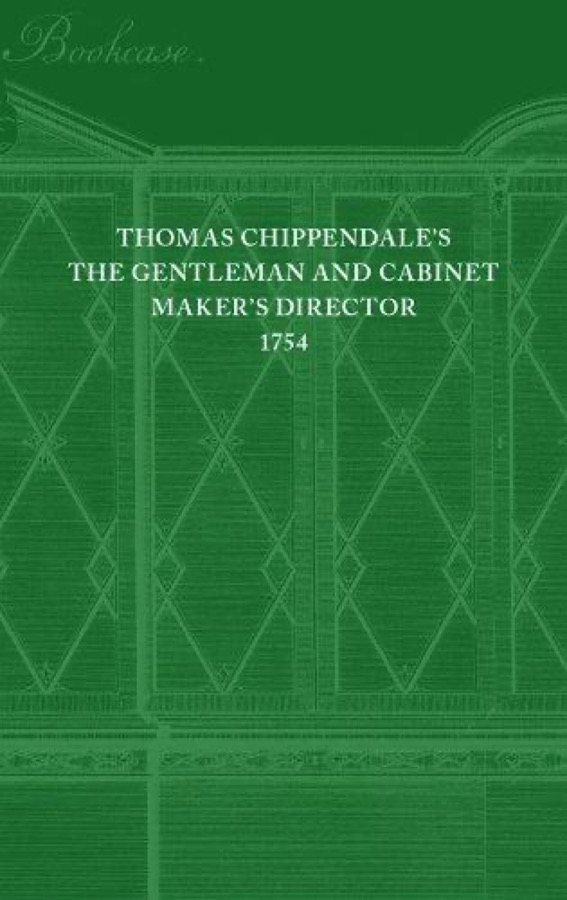
手仕事、装飾、家具、工芸
Thomas Chippendale
家具カタログと様式の共有が進み、「美しい道具」が職能として整理されていく時代です。代表書：『The Gentleman and Cabinet-Maker's Director』
「表現」の事例と展示の案内は、公式資料を含むため一般公開していません。
Googleアカウントでログインしてください（研究室で承認されたアカウントのみ）。
デザインとアートの事例を集めつつ、学内で展示できる場所も整理するページです。 「事例」で表現の地図を持ち、「展示」で発表の場へつなぎます。 このページは研究室メンバー限定です。画像は各公式サイト等から取得した資料で、学内共有用として掲載しています。
事例（デザイン／アート）と、学内の展示場所を行き来しながら集めます。
各国のデザインファームや事務所が、新しい仕事と事例を生み出しています。歴史と賞の地図を持ったうえで、いま動いているスタジオを見ていきます。
工芸からバウハウス、プロダクト、UI、サービスデザインまで。スタイルがはっきり見える時代は代表作、それ以外は考え方を紹介する代表的な本のカバーで示します。

手仕事、装飾、家具、工芸
Thomas Chippendale
家具カタログと様式の共有が進み、「美しい道具」が職能として整理されていく時代です。代表書：『The Gentleman and Cabinet-Maker's Director』
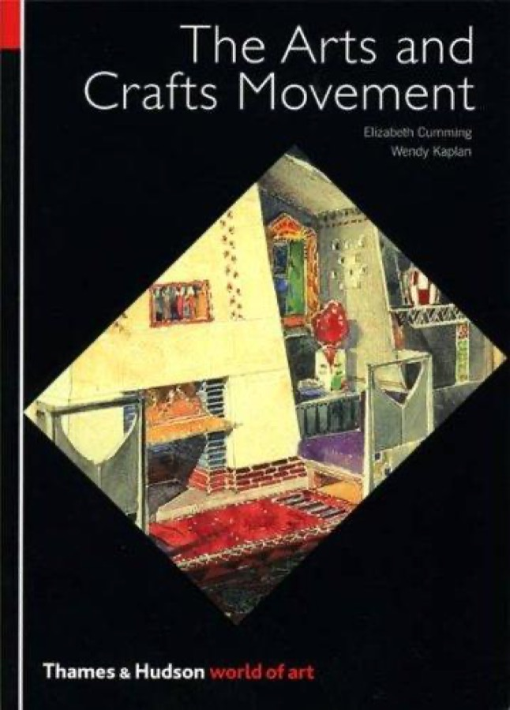
手仕事、生活の美、大量生産への反省
William Morris
産業化への応答として、日常の美と制作の倫理を結び直した近代デザインの源流です。代表書：『The Arts and Crafts Movement』
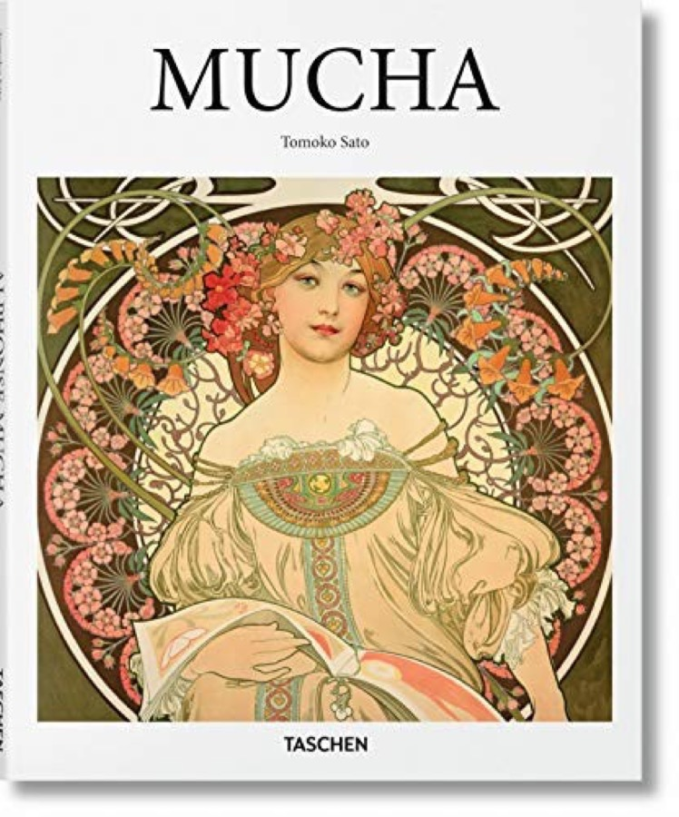
植物、有機的曲線、装飾
Alphonse Mucha、Antoni Gaudí
ポスターから建築まで、曲線と自然モチーフで「新しい芸術」を生活空間へ広げました。代表書：『Alphonse Mucha』（Taschen ほか）
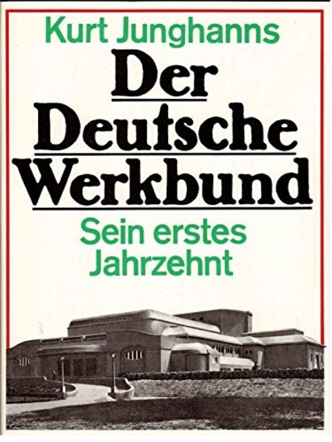
工業化、標準化、産業と芸術
Peter Behrens
企業アイデンティティや工業製品の品質を、芸術と設計の問題として扱いはじめた運動です（Werkbund）。代表書：『Der Deutsche Werkbund』

機能美、合理性、教育、総合芸術
Walter Gropius、László Moholy-Nagy、Marcel Breuer
芸術・工芸・工業を教育として統合し、近代デザインの方法と教育モデルの基準点になりました。
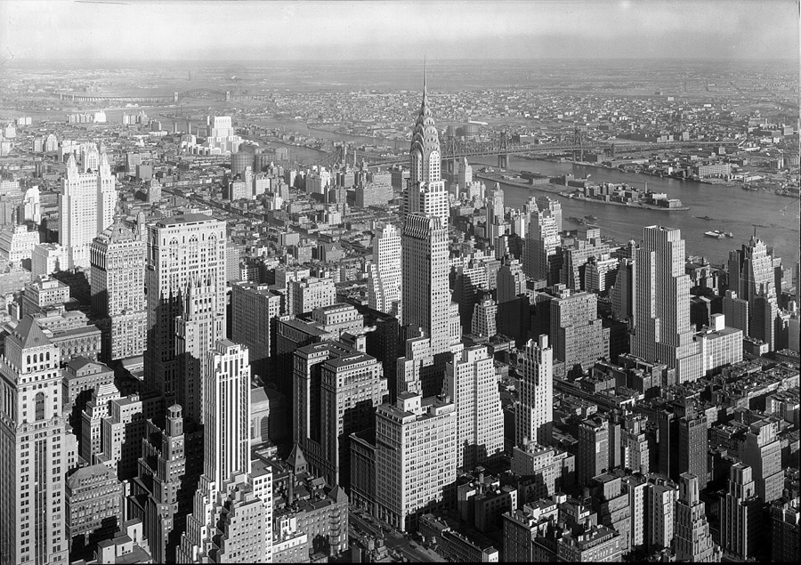
幾何学、豪華さ、機械美
Émile-Jacques Ruhlmann
直線・ジグザグ・金属光沢など、機械時代の華やかさをインテリアと都市の顔に翻訳しました。代表景観：クライスラー・ビルディング
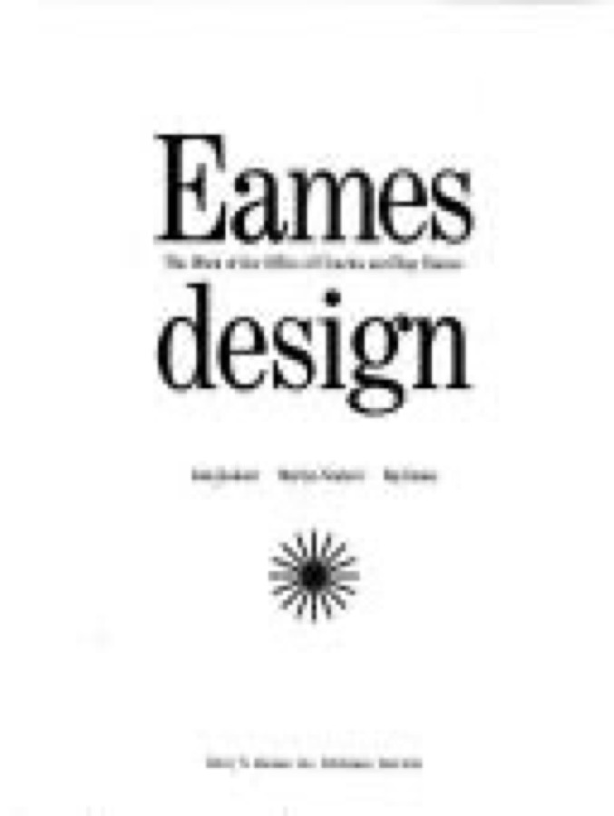
家具、住宅、成形合板、量産
Charles Eames、Ray Eames、George Nelson
戦後の住まいと量産技術が結びつき、軽やかな家具・住宅デザインが国際的に広がります。代表書：『Eames Design』
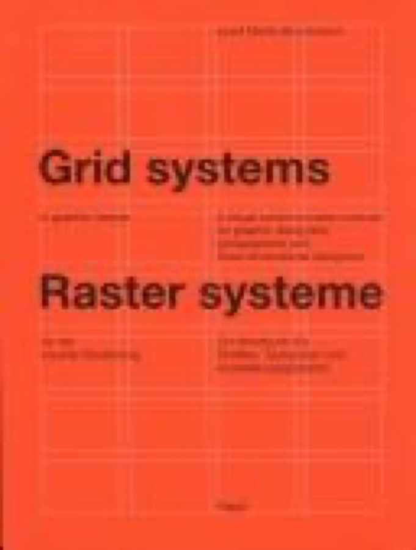
グリッド、タイポグラフィ、情報整理
Josef Müller-Brockmann、Armin Hofmann
可読性と秩序を徹底し、ポスターから企業コミュニケーションまで「情報の設計」を洗練させました。代表書：『Grid Systems in Graphic Design』

ミニマル、プロダクト、機能主義
Dieter Rams
「Less, but better」。操作のわかりやすさと長く使える形を、家電の標準言語にしました。代表書：『Less but Better』
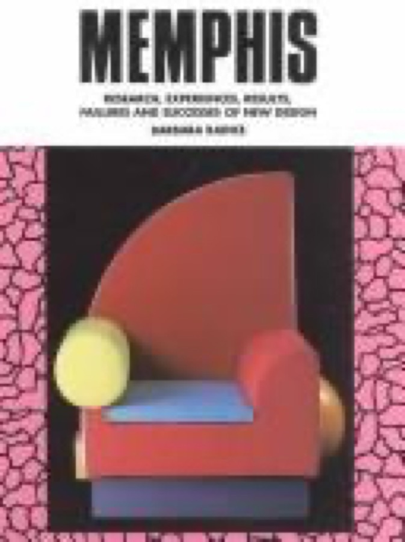
遊び、多様性、装飾の復活
Ettore Sottsass
機能主義一辺倒への反動として、色・模様・ユーモアを家具と空間へ大胆に戻しました。代表書：『Memphis』
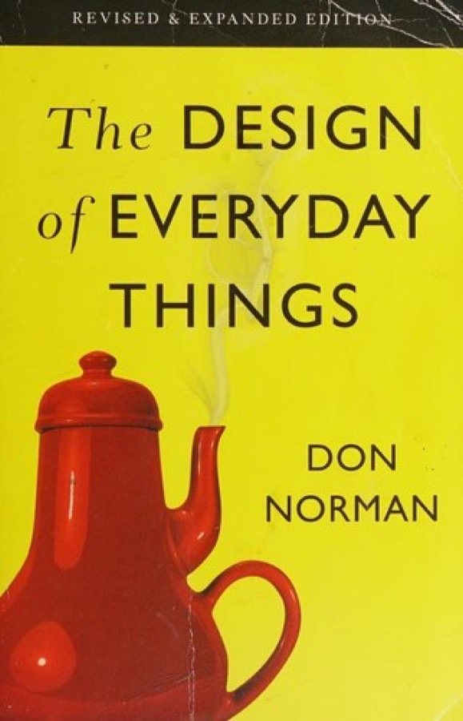
UI、UX、情報設計
Donald Norman
画面と操作の体験がデザイン対象になり、「使いやすさ」と認知の話が中心になります。代表書：『The Design of Everyday Things』

共創、ユーザー体験、課題解決
Tim Brown
プロトタイプと現場観察を軸に、製品を超えたサービスや組織の課題へ設計が広がります。代表書：『Change by Design』
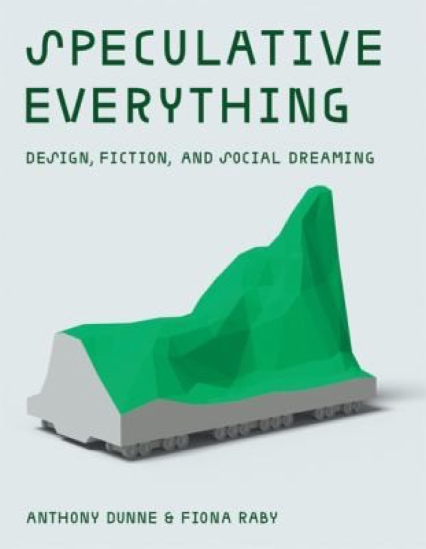
AI、未来社会、サステナビリティ、共創
（思索的デザイン／クリティカル・デザインの実践者群）
まだ無い社会を試作し、倫理と持続可能性を問う。研究室のマテリアル起点の実践とも接続しやすい領域です。代表書：『Speculative Everything』
バウハウスは建築写真、アール・デコはスタイルの分かる代表景観、それ以外は各考え方を紹介する代表書のカバー（Open Library 等）を用いています。
リサーチ、プロダクト、空間、体験まで——いま押さえておきたいスタジオです。カードから公式サイトへ移動できます。
エコロジー／政治／社会など設計を形づくる力を研究し、プロダクトから空間・戦略まで横断。「Cambio」で木材サプライチェーンを問う。リサーチ駆動の未来設計を示す。
公式サイト →リサーチ＆実験起点で価値観を拡張するコンテンポラリースタジオ。素材と都市の関係を再考する「Refoam」などで循環／共生を提案。
公式サイト →「進化を導く」を掲げ、グラフィック〜建築まで多領域で社会課題に挑むデザインファーム。「ADAPTMENT」で気候適応の都市戦略を探究。
公式サイト →東京・仙台・ロンドン拠点のビジュアルデザインスタジオ。3DCG／映像／インスタレーション／UX／R&Dを横断し、技術と物語で体験を設計。
公式サイト →建築・プロダクト・都市計画まで扱う英マルチアワードスタジオ。「Little Island」等で公共空間を彫刻的に再発明し、感情価値と都市レジリエンスを両立。
公式サイト →東京／ミラノ拠点。建築・インテリア・プロダクト・グラフィックを統合し、ミクロな発想で生活の不便を言語化。「rain bottle」など物語性ある体験へ。
公式サイト →Design Engineering を核に、デザインとエンジニアリングを往復しながら社会実装まで伴走。「LUNAR CRUISER UX/HMI」等で次世代移動体験を設計。
公式サイト →技術と表現の交差点を R&D で開拓するクリエイティブコレクティブ。AI 作品などで自己学習と創造性を可視化し、新しい知覚インターフェースを示す。
公式サイト →アート・科学・技術・自然の合流点を探る国際的集団。「Borderless」で境界ない作品世界を構築し、身体／空間／データが連続する体験を先取り。
公式サイト →人間中心設計にシステム思考と実験を組み合わせ、戦略〜プロダクト／サービスまで支援。複雑課題を「次に何が必要か」へ翻訳する方法論が特徴。
公式サイト →ブランド／プロダクト／サービスを統合設計。AI・VR 等の新技術を戦略と結び、スケールする体験を構築する姿勢が未来志向。
公式サイト →研究・戦略・設計・エンジニアリングで生活者の行動を変えるプロダクトを開発。「Good Grips」刷新など、ユニバーサルデザインを市場競争力に変換する。
公式サイト →プロダクトから体験まで「カテゴリ再定義」を狙うデザイン／イノベーションスタジオ。ハイブリッド電動ヨット「Solsea」等でサステナブル高級性を提案。
公式サイト →戦略／工業デザイン／エンジニアリング／ブランド／デジタル／空間を統合。スマートテキスタイル航空座席プロトタイプ「Move」など、素材×UX で次世代プロダクトを具現化。
公式サイト →Rhizomatiks や teamLab のように、デザインとアートの境界で動くコレクティブは、デザイン側の「横断」と、アート側の「作家性・ユニット」の両方から読めます。
左の時期は、毎年おおよその募集ウィンドウです（年により前後します）。タイトルから募集トップページへ移動できます。
デザイン（国内）
総合デザイン
日本を代表するデザイン賞。
募集トップ →プロダクト・サービス
学生・若手デザイナーの登竜門。
募集トップ →プロダクトデザイン
「NEXT DESIGN」をテーマに、製品化を前提としたアイデアを募集。学生・若手デザイナーの登竜門。
募集トップ →プロダクトデザイン
毎年テーマに沿った新しいプロダクトを提案する、日本を代表するアイデアコンペ。実現性と独創性を重視。
募集トップ →建築・展示・商空間
空間・インテリア・展示デザイン。
募集トップ →パッケージ
国内最高峰のパッケージデザイン賞。
募集トップ →ソーシャルデザイン
SDGs・地域・社会課題を扱うデザイン。
募集トップ →デザイン（海外）
ドイツ
世界三大デザイン賞。
募集トップ →ドイツ
世界最大級のデザイン賞。
募集トップ →アメリカ
工業・プロダクトデザインの最高峰の一つ。
募集トップ →アメリカ
コンセプトから製品まで幅広い分野を対象。
募集トップ →イタリア
建築・プロダクト・サービスなど幅広いカテゴリを持つ国際賞。
募集トップ →募集時期は近年のサイクルから示した目安です。応募前に必ず各公式の最新要項を確認してください。
ファームとは別に、個々のデザイナーとその事例もここに集めていきます。
事務所所属ではなく、個人名義で仕事を展開するデザイナーとその代表事例を、国や領域のタグ付きで追加予定です。
準備中アートで特に重要なのは、作者・制作者がどんな問いを持ち、それをどう実装したか——そしてその実装方法の新しさや開拓の中身です。 話題性の高い一作で一気に評価されることもありますが、大抵は長年の作品の積み重ねのなかで、自身の作家性や文脈をつくっていきます。
個人の作家性を考えるうえで、まず押さえておきたい作家です。代表作を、問い・実装・開拓の観点から短く記します。
中世から現代まで、様式の移り変わりを短い年表で示します。写真は小さく、各時代の代表的な見え方を掴むための手がかりです。 批評・市場の話（グリーンバーグら）は、この年表のうえで「誰が何を正史にしたか」を読む補助線になります。
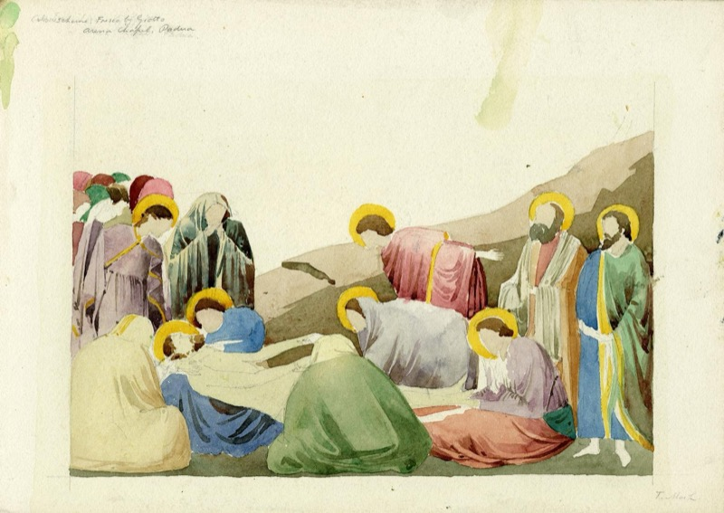
宗教、象徴、教会、美術は信仰のため
Giotto
権力と信仰の制度のなかで、物語と象徴が壁面に定着されていきます。
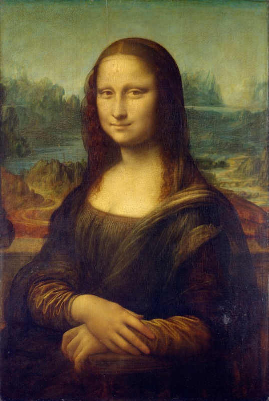
人間中心、遠近法、解剖学、写実
Leonardo da Vinci、Michelangelo、Raphael
観察と数学が結びつき、「見える世界」を再構成する技術が大きく更新されました。
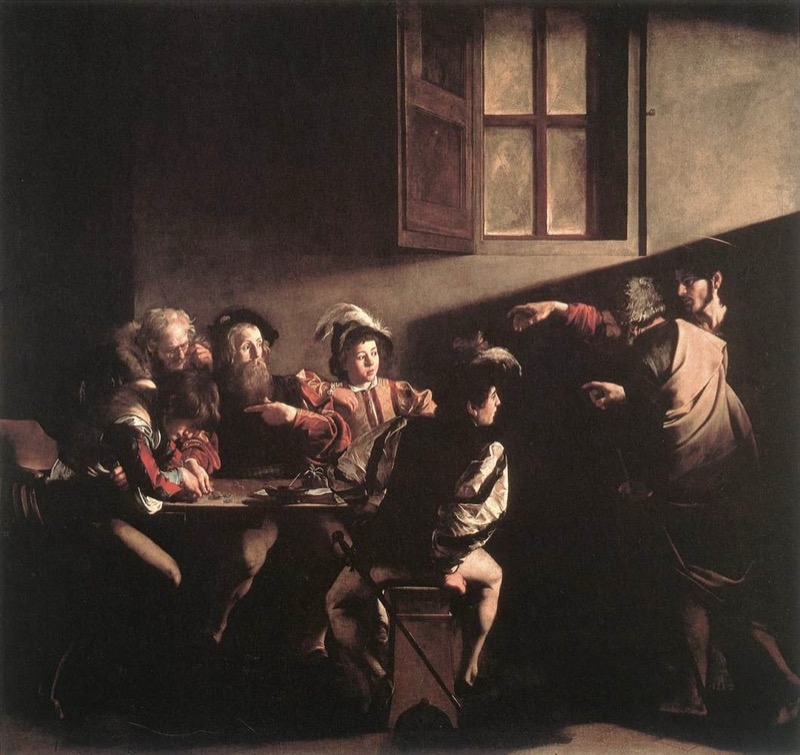
光と影、劇的表現、躍動感
Caravaggio、Rembrandt
明暗法と身体の動きで、場面の緊張感を劇場的に立ち上げます。
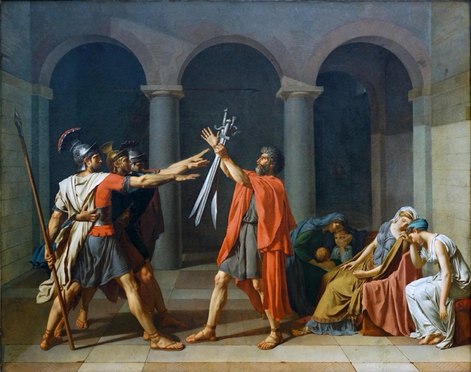
理性と感情、英雄、自然
Jacques-Louis David、Eugène Delacroix
秩序と情熱が拮抗し、歴史・革命・自然が大きな主題になります。
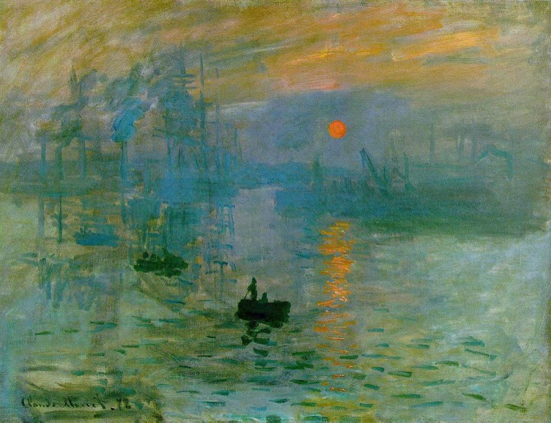
光、色彩、日常風景
Claude Monet、Edgar Degas、Pierre-Auguste Renoir
アトリエの外へ出て、一瞬の光と日常を筆触で捉える実践が広がります。
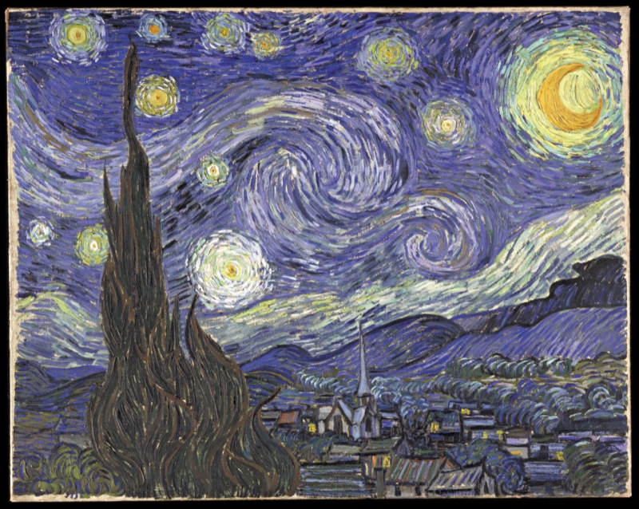
個性、感情、構成
Vincent van Gogh、Paul Cézanne、Paul Gauguin
印象派のあとに、構造・象徴・感情へ各自の道が分岐していきます。
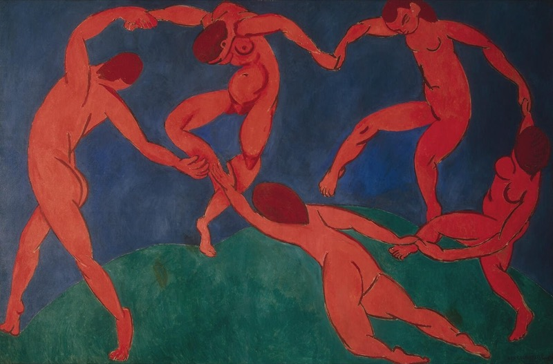
強烈な色彩、感情表現
Henri Matisse、Edvard Munch
色そのものが感情の担い手になり、写実よりも内的な強度が優先されます。
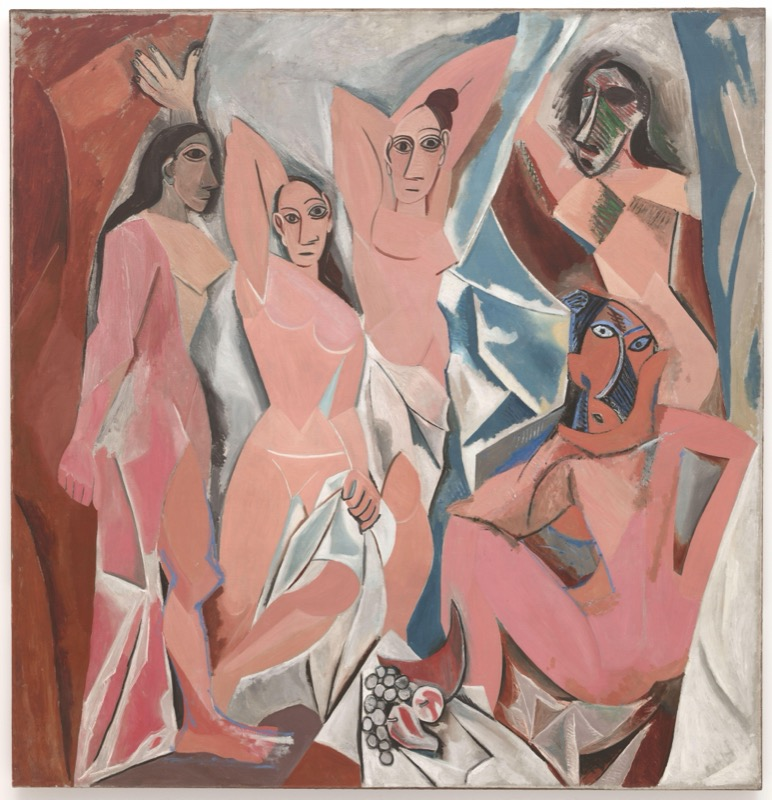
幾何学、多視点、分解
Pablo Picasso、Georges Braque
一つの視点に縛られず、対象を分解・再構成する視覚が生まれます。
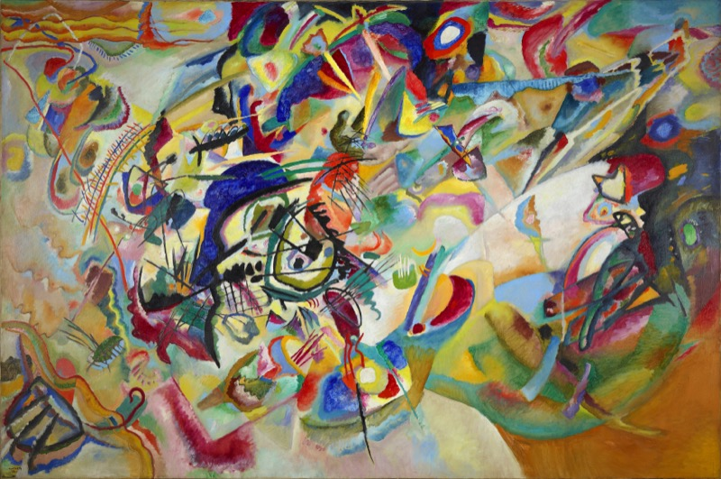
非具象、形と色
Wassily Kandinsky、Piet Mondrian
物語や物の描写から離れ、形・色・リズムそのものが主題になります。

無意識、夢、偶然
Marcel Duchamp、Salvador Dalí
既成の美術観を揺さぶり、夢・レディメイド・偶然性を制作の中心へ引き入れました。
身体性、巨大作品、行為
Jackson Pollock、Mark Rothko
描く行為や色面の規模そのものが、戦後アメリカ美術の中心課題になります。
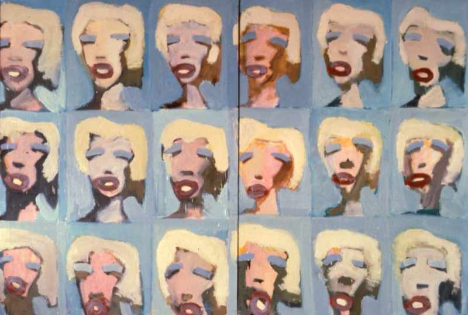
大衆文化、消費社会、シンプル
Andy Warhol、Roy Lichtenstein、Donald Judd
広告や量産品を美術へ取り込みつつ、別の極では工業的な簡潔さが追求されます。

コンセプト、社会課題、インスタレーション
Damien Hirst、Olafur Eliasson、Yayoi Kusama
問いと実装の更新が主戦場に。詳細は上の「知っておくべき作家」も参照してください。
クレメント・グリーンバーグら批評家とコレクターが、ニューヨークなどを拠点に評価軸と市場を組み立て、近代以降の「正史」を形づくってきました。
様式名を暗記するより、各時代が「何を新しくしたか」を見るのが有効です。自分の問いが、どの文脈の延長／切断にあるかを考える地図として使ってください。
現代のアーティストの活躍の場は多岐にわたります。地方芸術祭、各種コンペ、SNS など——場を自分で選び、広げていく人が増えています。
土地・コミュニティ・期間限定の場で作品を立ち上げる。場所と向き合いながら、問いを社会に開く回路です。
受賞をきっかけに名前が広がり、次の制作機会につながることも多い。挑戦そのものが実践の一部です。
国内外を問わず、作品とプロセスを直接開く場。制度の外側から観客や協働者に届けるルートが増えています。
場を選ぶことも実装の一部です。ただし評価の核は、やはり問いの深さとその実装・開拓にあります。
デザインと重なる部分もありますが、スペキュラティブ・デザイン（思索的デザイン）や、素材から問いを立ち上げる実践があります。 当研究室はマテリアル・ドリブン（素材起点）なアートを考える傾向が強いため、次の作家を「問い／実装／開拓」で紹介します。
これらに挑戦し、受賞をきっかけに名前を上げていく人も多くいます。コンペの左列は毎年おおよその募集時期、タイトルは募集トップへのリンクです。
地方芸術祭
六甲山の自然と芸術が交差する芸術祭。場所の体験と作品が一体になるサイトスペシフィックな実践の場です。
瀬戸内の島々を舞台にした国際芸術祭（ビエンナーレ）。地域・観光・現代美術が交わる大規模な場として広く知られます。
横浜を拠点とする国際現代美術展。都市空間と美術の接続、国際的なキュレーションの視点を学べる場です。
1895年創設の国際美術展。ジャルディーニとアルセナーレを舞台に、国家パヴィリオンと国際展が並ぶ、現代美術の最重要の場のひとつです。
越後妻有を舞台にした大地の芸術祭。過疎・農業・コミュニティと現代美術が結びつく、地域循環型の芸術祭の代表例です。
アート（国内）※現代アート・立体・インスタレーション・メディアアート中心
現代アート
インスタレーション・彫刻・大型作品が多く、日本を代表する若手現代美術賞。
募集トップ →インスタレーション
六本木のパブリックスペースに展示される実制作型コンペ。
募集トップ →メディアアート
テクノロジー・映像・空間表現を扱う国内有数のメディアアート公募。
募集トップ →野外アート
山全体を舞台にしたランドアート・環境芸術・大型作品。
募集トップ →都市型アート
街全体を舞台にした参加型・サイトスペシフィック作品を募集。
募集トップ →アート（海外）※世界的に評価の高いメディアアート・立体・現代アート
オーストリア
メディアアートでは世界最高峰。
募集トップ →EU
アート・デザイン・科学技術の融合。
募集トップ →イギリス
AI・デジタルアート・XRなど最先端表現。
募集トップ →イタリア
彫刻・インスタレーション・デジタル作品など幅広い。
募集トップ →オーストラリア
世界最大級の野外彫刻コンペ。
募集トップ →募集時期は近年のサイクルから示した目安です。MAT やビエンナーレ系は開催年・プログラムにより公募の有無が変わるため、応募前に公式を確認してください。
学内で作品を発表できる場所です。予約状況の確認と申し込みの入口をまとめています。利用前に現地確認と公式案内の再確認をお願いします。
映像音響ラウンジ、展示ウィング、アクティビティウォールなど、展示・イベントに使える施設があります。 予約状況は下記の公式ページから確認してください。芸工（芸術工学部）の図書館受付でも確認できます。予約・利用申請のフォーム登録も、同ページから進められます。
施設・設備ページ（予約・申請） →利用を希望する場合は、まず相談してください（田羅まで）。 1号館の先生方のスケジュールが優先となりますが、教員で相談のうえ、利用可能となる場合もあります。
利用希望は教員へ相談カレンダーで予約状況を確認し、フォームから応募してください。 展示期間中であっても、相談のうえ展示の入れ替えなどを行える場合があります。
予約カレンダー・応募フォーム →図書館の施設利用は、申込時点では予約完了にならない場合があります。ガイドラインと現地確認のうえ、希望日の余裕をもって申請してください。 「未来のスペース」は公式サイト上のカレンダーと利用フォームを正とします。